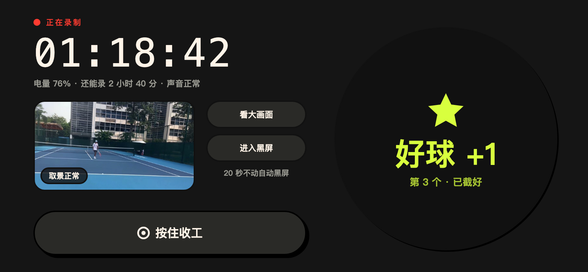
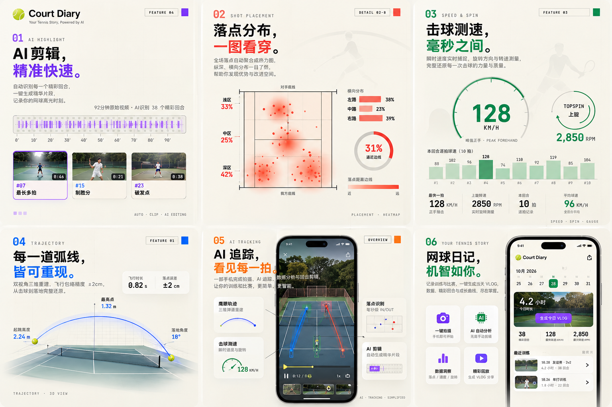

01
架好
看一眼正在录，就回去打球。
让人专心打球，赛后也能很快找到想留下的那几球。

架好手机，确认正在录。赛后从标记进入挑选。
手机架在球场边，用户不方便频繁查看屏幕；比赛结束后，一段很长的录像又让挑选好球变得费力。产品要解决的不只是“录下来”，还要帮助用户知道记录是否可靠，并找到下一步。
资料中确认的两个重点是“录完不知道干嘛”和“挑球累”。因此设计从完整旅程入手：架好手机、安心打球、结束后找到内容，再挑选和分享。
关键取舍就这一句：场上只做标记，挑选和分享全部留到赛后。
场上用手机或手表记下刚刚那一球，马上有反馈。赛后再回看、筛选、分享。打球的时候不管理素材。
录制状态必须可信。开始后短暂保留画面，帮助用户确认已经录制；发生中断时说明情况，让用户知道已有内容与下一步。
看一眼正在录，就回去打球。
手机或手表点一下，刚打的那球记下来。
有标记先看标记。没有就翻整场，再截出来分享。
围绕收工时刻设计明确的下一步：有标记时优先展示标记片段；没有标记或自动结果时，仍提供浏览整场、手动截取的路径。挑选过程以画面为中心，减少在列表和播放器之间反复跳转。
